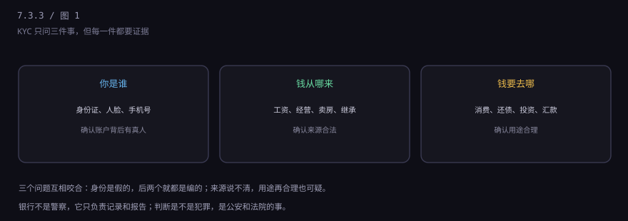
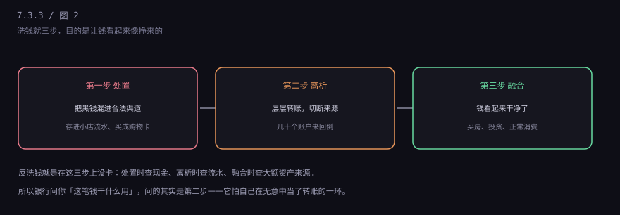
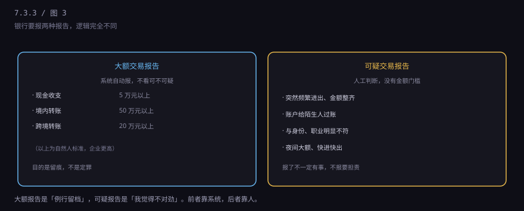

约 0.2 万字 · 3 张图 · 银行不是警察，但它有一项法定的"报告义务"
这套流程有个专业名字，叫 KYC，意思是"了解你的客户"。 落到操作上，就是三个问题。

你是谁：身份证、人脸、手机号实名。开户时做过，之后大额交易还会再核。
钱从哪来：工资、经营收入、卖房、继承、投资盈利。 这一问最容易被问住，因为很多人说不清自己的钱是怎么攒下来的。
钱要去哪：消费、还债、投资、给家人。用途要跟身份和收入匹配—— 一个每月工资八千的人，突然要转 50 万给境外账户，就会被标记。
要理解银行为什么问，得先知道它在防什么。洗钱分三步，教科书上叫"处置、离析、融合"。

处置：把现金塞进能收现金的生意里——小店、棋牌室、美容院， 做成"营业收入"。
离析：几十个账户来回倒，买理财、买虚拟币、跨境汇款， 每一层都切一刀，让追查的人跟丢。
融合：钱再出现时，已经是"卖房所得"、"投资收益"、"亲戚借款"， 可以光明正大地花。
整个过程里，银行账户是最关键的一环。 没有账户，钱只能在现金层面打转，规模上不去。所以反洗钱的核心战场就在银行。
很多人以为银行"盯着"自己的账户。准确说，它是按规则报数据。 报的东西分两种，逻辑完全不同。

大额交易报告是自动的，只要过了线就报，不问原因。 目前的大致标准是：现金收支 5 万元以上、境内转账 50 万元以上、 跨境转账 20 万元以上（自然人口径，企业更高）。
这个报告的量非常大，全国每天几百万笔。它的作用不是"抓人"，是"留痕"—— 万一以后查案，这些记录能还原资金路径。
可疑交易报告是人工判断的，没有金额门槛。 一块钱也可能被报，只要形态可疑：比如一个学生账户突然每天进出几十万、 一个账户给几百个陌生人转账、深夜频繁大额、快进快出不留余额。
银行报了不等于你有事。它只是把疑点交给反洗钱监测分析中心， 由那边判断要不要转给公安。但反过来说，该报不报，银行要被罚， 所以它宁可多报。
因为罚得很重，而且是双罚：罚机构，也罚人。
2020 年以来，央行对银行的反洗钱罚单经常是千万级，个别案子过亿。 除了罚款，相关负责人可能被处罚、被禁业。对网点来说， 开的账户涉案，客户经理要被追责，绩效扣光。
所以你在柜台感受到的那种"过度谨慎"，本质是风险传导到了最末端： 监管罚银行，银行罚网点，网点只能对客户严。
2020 年 10 月起，公安部等部门搞了"断卡行动"，专打买卖电话卡、银行卡。 背景是电信诈骗的资金链：骗子要收钱，必须有卡。
惩戒措施很实际：出租、出借、出售银行卡的人， 5 年内不能开新户、不能使用手机银行和网上银行、不能扫码支付， 只能用柜台业务。这个惩罚对现代人来说，几乎等于"金融生活停摆"。
更重的还有刑事责任：明知是犯罪所得还帮忙转账、取现、买币， 可能构成"掩饰、隐瞒犯罪所得罪"或"帮信罪"。 很多涉案的年轻人以为只是"兼职跑分"，最后判了刑。
先分清是哪种冻结，处理方式完全不同。
第一种：银行风控冻结。 短信或 App 会提示"账户存在风险"。带身份证去柜台， 说明资金来源，一般当天能解。
第二种：公安冻结。 客服会告诉你"司法冻结"，但不会说具体案子。 你需要联系办案单位（通常是异地的某公安局）， 提供工资流水、合同、聊天记录等证明自己不知情、资金来源合法。
第三种：惩戒名单。 如果被认定出租出借账户，会被列入惩戒名单， 五年内限制业务。这种情况申诉难度大，需要走行政复议或者诉讼。
一个实用建议：冻结期间别再往这张卡里打钱， 也别急着销户。销户解决不了冻结，反而可能被视为规避调查。
四条，都很具体。
下一节讲开户流程的最后一块拼图，也是跟每个人关系最久的一样东西： 征信。那份关于你的档案里，到底写了什么。